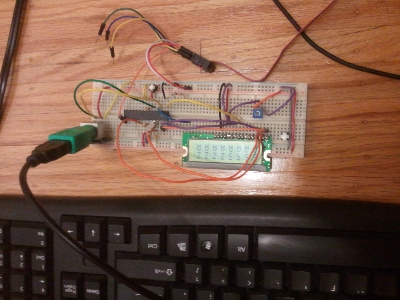
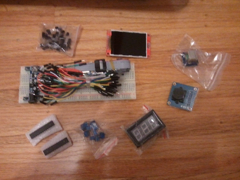
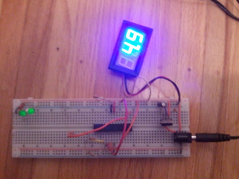

{kind=link}


Keyboard now working reliably. Had to use UART mode rather than SPI. UART does check/removal of parity, start, and stop bits automatically in the internal hardware, much quicker than is possible in software.
Got the 2.4" TFT Display working. Kept having issues with the chip intermittently stopping communications with the display. Seems the SS pin of the AVR is an input by default and floats, and when the pin goes low due to noise or whatever the AVR drops out of SPI master mode, ruining communications between AVR and TFT Display. Finally fixed it after a google search and setting the SS pin to be an output. Ended up porting a library from Adafruit for the Display and am glad I did, since it comes with a bunch of fonts and functions for drawing pictures quickly that would have taken me maybe a year to write myself.
|  |
Tried to interface a USB keyboard through a USB->PS2 adapter to a PS2 port connected to the AVR and display output on an LCD (to make sure it's working). It works but not reliably. Will try to fix later. |
|
Purchased a usbasp programmer. Tried to program an atmega328p chip but failed. |
|
Trying to program with Raspberry Pi minicomputer. Raspberry PI has a bunch of pins that you can use to send output and someone wrote a guide how to do that also avrdude supports this only you have to edit the avrdude.conf file to specify the particular ports you are using. |
Programming failed again.
Later realized a crystal oscillator might be needed since the AVR chip may have been modified to use a crystal oscillator for some reason.
|
|
|
Success! Notice the leds are blinking/on. The oscillator is the metal bread loaf shaped thing.
So the moral of the story is to connect a crystal oscillator to the AVR before programming it if you are doing this without an Arduino because a lot of chips require the oscillator to function. (Arduino board comes with the oscillator)
|  |
Received a bunch of electronic parts in the mail. |
|  |
Picture of the voltmeter. Great product I think. Found it on Ebay. |
I had some free time so I decided to learn how to use the AVR microcontrollers.
I purchased an atmega328p microcontroller and some other electronic stuff.
First I stripped a parallel port cable then I labelled every single wire through trial and error using inb outb commands on linux.
Eventually I connected the wires to the AVR and used the avrdude program to try and program it.
Unfortunately, programming has failed. Will try again later.
{kind=link}
{kind=link}